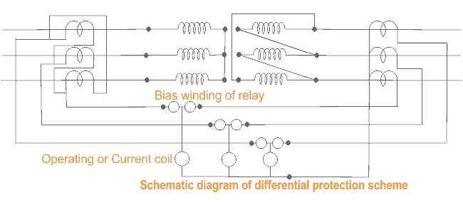
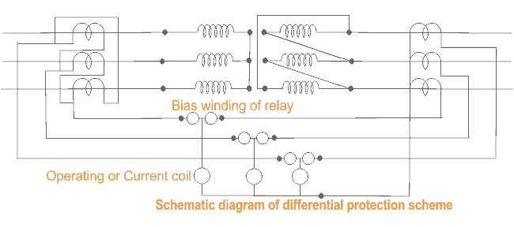

Generally Differential protection is provided in the electrical power transformer rated more than 5MVA.
The Differential Protection of Transformer has many advantages over other schemes of protection.
The Differential Protection of Transformer has many advantages over other schemes of protection.
1) The faults occur in the transformer inside the insulating oil can be detected by Buchholz relay. But if any fault occurs in the transformer but not in oil then it can not be detected by Buchholz relay. Any flash over at the bushings are not adequately covered by Buchholz relay. Differential relays can detect such type of faults. Moreover Buchholz relay is provided in transformer for detecting any internal fault in the transformer but Differential Protection scheme detects the same in more faster way.
2) The differential relays normally response to those faults which occur in side the differential protection zone of transformer.
Differential Protection Scheme in a Power Transformer
Principle of Differential Protection
Principle of Differential Protection scheme is one simple conceptual technique. The differential relay actually compares between primary electric current and secondary electric current of power transformer, if any unbalance found in between primary and secondary currents the relay will actuate and inter trip both the primary and secondary circuit breaker of the transformer.
Suppose you have one transformer which has primary rated electric current Ip and secondary electric current Is. If you install CT of ratio Ip/1A at primary side and similarly, CT of ratio Is/1A at secondary side of the transformer. The secondaries of these both CTs are connected together in such a manner that secondary currents of both CTs will oppose each other. In other words, the secondaries of both CTs should be connected to same electric current coil of differential relay in such a opposite manner that there will be no resultant electric current in that coil in normal working condition of the transformer. But if any major fault occurs inside the transformer due to which the normal ratio of the transformer disturbed then the secondary electric current of both transformer will not remain the same and one resultant electric current will flow through the electric current coil of the differential relay, which will actuate the relay and inter trip both the primary and secondary circuit breakers. To correct phase shift of electric current because of star - delta connection of transformer winding in case of three phase transformer, the electric current transformer secondaries should be connected in delta and star as shown here.

At maximum through fault current, the spill output produced by the small percentage unbalance may be substantial. Therefore, differential protection of transformer should be provided with a proportional bias of an amount which exceeds in effect the maximum ratio deviation.

At maximum through fault current, the spill output produced by the small percentage unbalance may be substantial. Therefore, differential protection of transformer should be provided with a proportional bias of an amount which exceeds in effect the maximum ratio deviation.
 by
by